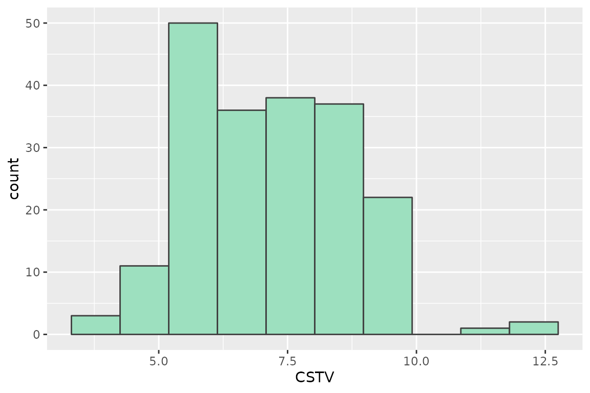
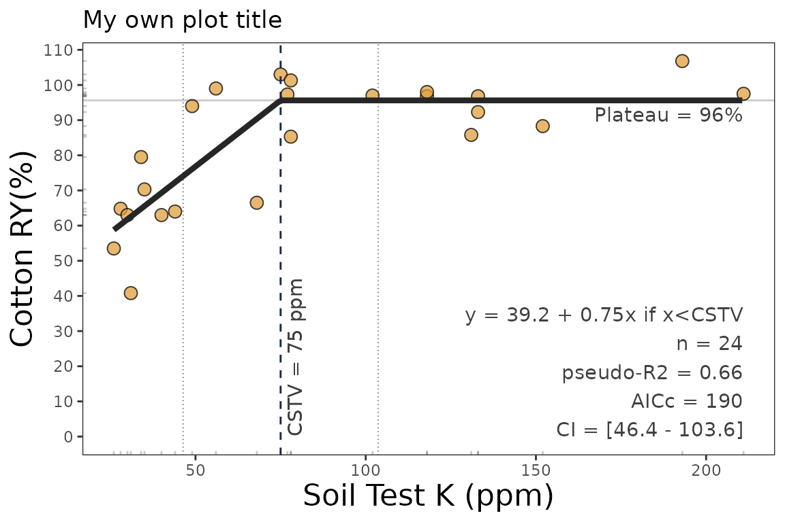
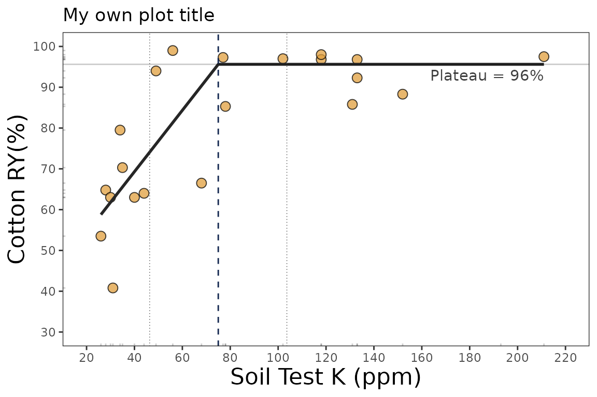

Linear-plateau response
Adrian Correndo & Austin Pearce
linear_plateau_tutorial.Rmd
Description
This tutorial is intended to show how to deploy the linear_plateau() function for estimating a continuous response model with a critical soil test value. This function fits the classical regression response model that follows two phases: i) a first linear phase described as y = b0 + b1 x, and ii) a second phase were the RY response to increasing STV becomes NULL (flat), described as plateau = y = b0 + b1 Xc, where Xc represents the CSTV. The function works automatically with self starting initial values to facilitate the model’s convergence. This approach is one of the regression models with simple interpretation of its parameters. Some disadvantages are that: i) the user does not have control to estimate the critical value (the model parameter) for an specific ry level; and ii) the confidence interval of the critical level is generally unreliable. Preferably, the user would have need to use a re-sampling technique for a more reliable confidence interval estimation (e.g. bootstrapping)
General Instructions
Load your dataframe with soil test value (stv) and relative yield (ry) data.
Specify the following arguments into the function -linear_plateau()-:
(a). `data` (optional), <br/>
(b). `stv` (soil test value) and `ry` (relative yield) columns or vectors, <br/>
(c). `plot` TRUE (produces a ggplot as main output) or FALSE (no plot, only results as data.frame), <br/>
(d). `resid` TRUE (produces plots with residuals analysis) or FALSE (no plot), <br/>Run and check results.
Check residuals plot, and warnings related to potential limitations of this model.
Adjust curve plots as desired.
Tutorial
Suggested packages
# Install if needed
require(ggplot2) # Plots
require(dplyr) # Data wrangling
require(tidyr) # Data wrangling
require(purrr) # MappingThis is a basic example using three different datasets:
Load datasets
# Example 1 dataset
# Fake dataset manually created
data_1 <- data.frame("RY" = c(65,80,85,88,90,94,93,96,97,95,98,100,99,99,100),
"STV" = c(1,2,3,4,5,6,7,8,9,10,11,12,13,14,15))
# Example 2. Native fake dataset from soiltestcorr package
data_2 <- soiltestcorr::data_test
# Example 3. Native dataset from soiltestcorr package, Freitas et al. (1966), used by Cate & Nelson (1971)
data_3 <- soiltestcorr::freitas1966Fit linear_plateau()
1. Individual fits
RY target = 90%, confidence level = 0.95, replace with your desired values
1.1. tidy = FALSE
It returns a LIST (more efficient for multiple fits at once)
# Using dataframe argument, tidy = FALSE -> return a LIST
fit_1_tidy_false <-
soiltestcorr::linear_plateau(data = data_1,
ry = RY,
stv = STV,
tidy = FALSE)
head(fit_1_tidy_false)
#> $intercept
#> [1] 65.87
#>
#> $slope
#> [1] 5.09
#>
#> $equation
#> [1] "65.9 + 5.09x if x<CSTV"
#>
#> $CSTV
#> [1] 6.2
#>
#> $LL
#> [1] 5.1
#>
#> $UL
#> [1] 7.41.2. tidy = TRUE
It returns a data.frame (more organized results)
# Using dataframe argument, tidy = FALSE -> return a LIST
fit_1_tidy_true <-
soiltestcorr::linear_plateau(data = data_1,
ry = RY,
stv = STV,
tidy = TRUE)
fit_1_tidy_true
#> intercept slope equation CSTV LL UL CI_type
#> 1 65.87 5.09 65.9 + 5.09x if x<CSTV 6.2 5.1 7.4 Wald Conf. Interval
#> plateau AIC AICc R2
#> 1 97.4 82 86 0.91.3. Alternative using the vectors
You can call stv and ry vectors using the $.
The tidy argument still applies for controlling the output type
fit_1_vectors_list <-
soiltestcorr::linear_plateau(ry = data_1$RY,
stv = data_1$STV,
tidy = FALSE)
fit_1_vectors_tidy <-
soiltestcorr::linear_plateau(ry = data_1$RY,
stv = data_1$STV,
tidy = TRUE)1.4. Data 2. Test dataset
fit_2 <-
soiltestcorr::linear_plateau(data = data_2,
ry = RY,
stv = STV)
head(fit_2)
#> $intercept
#> [1] 53.72
#>
#> $slope
#> [1] 1.55
#>
#> $equation
#> [1] "53.7 + 1.55x if x<CSTV"
#>
#> $CSTV
#> [1] 27.4
#>
#> $LL
#> [1] 24
#>
#> $UL
#> [1] 30.71.5. Data 3. Freitas et al. 1966
fit_3 <-
soiltestcorr::linear_plateau(data = data_3,
ry = RY,
stv = STK)
head(fit_3)
#> $intercept
#> [1] 39.24
#>
#> $slope
#> [1] 0.75
#>
#> $equation
#> [1] "39.2 + 0.75x if x<CSTV"
#>
#> $CSTV
#> [1] 75
#>
#> $LL
#> [1] 46.4
#>
#> $UL
#> [1] 103.62. Multiple fits at once
2.1. Using map
Fit
# Run multiple examples at once with map()
fit_multiple_map <-
data.all %>%
mutate(linear_plateau = purrr::map(data,
~ soiltestcorr::linear_plateau(ry = .$RY,
stv = .$STV,
tidy = TRUE)))
head(fit_multiple_map)
#> # A tibble: 3 × 3
#> id data linear_plateau
#> <chr> <list> <list>
#> 1 1 <tibble [15 × 2]> <df [1 × 11]>
#> 2 2 <tibble [137 × 2]> <df [1 × 11]>
#> 3 3 <tibble [24 × 2]> <df [1 × 11]>2.1. Using group_map
Alternatively, with group_map, we do not require nested data.
However, it requires to bind_rows and add an id column specifying the name of each dataset.
This option return models as lists objects.
fit_multiple_group_map <-
bind_rows(data_1, data_2, .id = "id") %>%
group_by(id) %>%
group_map(~ soiltestcorr::linear_plateau(data = .,
ry = RY,
stv = STV,
tidy = TRUE))
head(fit_multiple_group_map)
#> [[1]]
#> intercept slope equation CSTV LL UL CI_type
#> 1 65.87 5.09 65.9 + 5.09x if x<CSTV 6.2 5.1 7.4 Wald Conf. Interval
#> plateau AIC AICc R2
#> 1 97.4 82 86 0.9
#>
#> [[2]]
#> intercept slope equation CSTV LL UL CI_type
#> 1 53.72 1.55 53.7 + 1.55x if x<CSTV 27.4 24 30.7 Wald Conf. Interval
#> plateau AIC AICc R2
#> 1 96.2 1026 1026 0.523. Plots
3.1. Calibration Curve
We can generate a ggplot with the same linear_plateau() function.
We just need to specify the argument plot = TRUE.
linear_plateau_plot <-
soiltestcorr::linear_plateau(data = data_3,
ry = RY,
stv = STK,
plot = TRUE)
linear_plateau_plot ### 3.1.2 Fine-tune the plots
As ggplot object, plots can be adjusted in several ways.
For example, modifying titles
linear_plateau_plot_2 <-
linear_plateau_plot +
# Main title
ggtitle("My own plot title")+
# Axis titles
labs(x = "Soil Test K (ppm)",
y = "Cotton RY(%)")
linear_plateau_plot_2
Or modifying axis scales
linear_plateau_plot_3 <-
linear_plateau_plot_2 +
# Axis scales
scale_x_continuous(limits = c(20,220),
breaks = seq(0,220, by = 20))+
# Axis limits
scale_y_continuous(limits = c(30,100),
breaks = seq(30,100, by = 10))
linear_plateau_plot_33.3. Residuals
We can generate a plot with the same linear_plateau() function.
We just need to specify the argument resid = TRUE`.
# Residuals plot
soiltestcorr::linear_plateau(data = data_3,
ry = RY,
stv = STK,
resid = TRUE)
#> $intercept
#> [1] 39.24
#>
#> $slope
#> [1] 0.75
#>
#> $equation
#> [1] "39.2 + 0.75x if x<CSTV"
#>
#> $CSTV
#> [1] 75
#>
#> $LL
#> [1] 46.4
#>
#> $UL
#> [1] 103.6
#>
#> $CI_type
#> [1] "Wald Conf. Interval"
#>
#> $plateau
#> [1] 95.6
#>
#> $AIC
#> [1] 188
#>
#> $AICc
#> [1] 190
#>
#> $R2
#> [1] 0.66 References